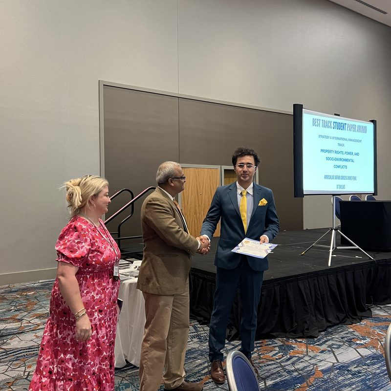
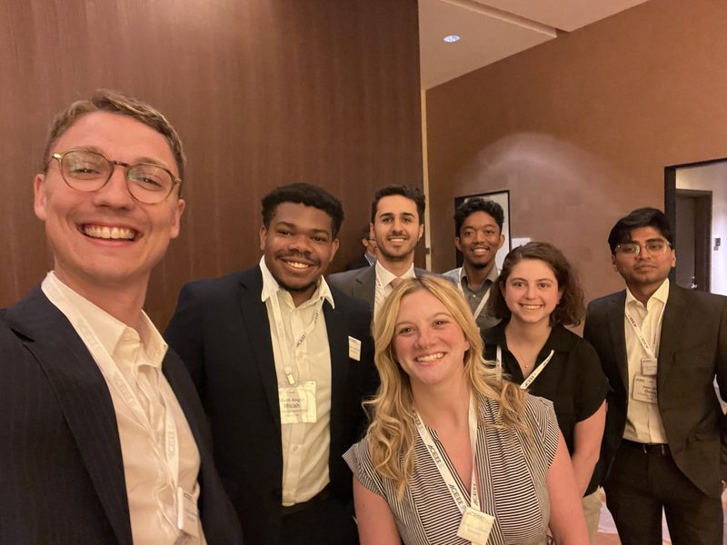

Curriculum vitae
PhD candidate in Organization, Strategy, and International Management, University of Texas at Dallas.
Education
University of Texas at Dallas
PhD, Organization, Strategy, and International Management
American University, Washington, DC
MSc, Sustainability Management
Shahid Beheshti University
MA, Information Technology Management
Payam Noor University
BA, Business Administration and Management
Experience
University of Texas at Dallas
Graduate assistant and instructor
American University
Graduate assistant, research and teaching
Honors and awards
Nominated for the Best PhD Paper Award, Strategic Management Society Conference, San Francisco
Top Student Paper Award, Eastern Academy of Management, Baltimore
Linda Latham Scholarship (ACEEE), Industry Summer Study, Detroit. One of seven recipients worldwide.


Skills
Languages
English (advanced), French (intermediate)
Data visualization
Excel, PowerPoint, Power BI, Tableau, R, ArcGIS Pro, Google Earth Engine
Statistical analysis
Jamovi, R, SPSS, Stata, Python, Stan
Linguistics and computation
Deconstruction, historical discourse analysis, machine learning, deep learning, NLP, LLMs
Service
Co-interviewed authors for the ASQ Blog on their Administrative Science Quarterly paper, "If I Could Turn Back Time".
Ad-hoc peer review
More than 40 reviews for:
Journal of Business Venturing
Cross Cultural & Strategic Management
Energy Strategy Reviews
World Development Sustainability
Sustainable Production and Consumption
Sustainable Manufacturing and Service Economics
Papers in Applied Geography
Technology in Society
Academy of Management Conference, 2024 and 2025
Academy of International Business Conference, 2025
Southern Management Association Conference, 2026
Eastern Academy of Management Conference, 2026
Bridging Transportation Researchers Conference, 2021